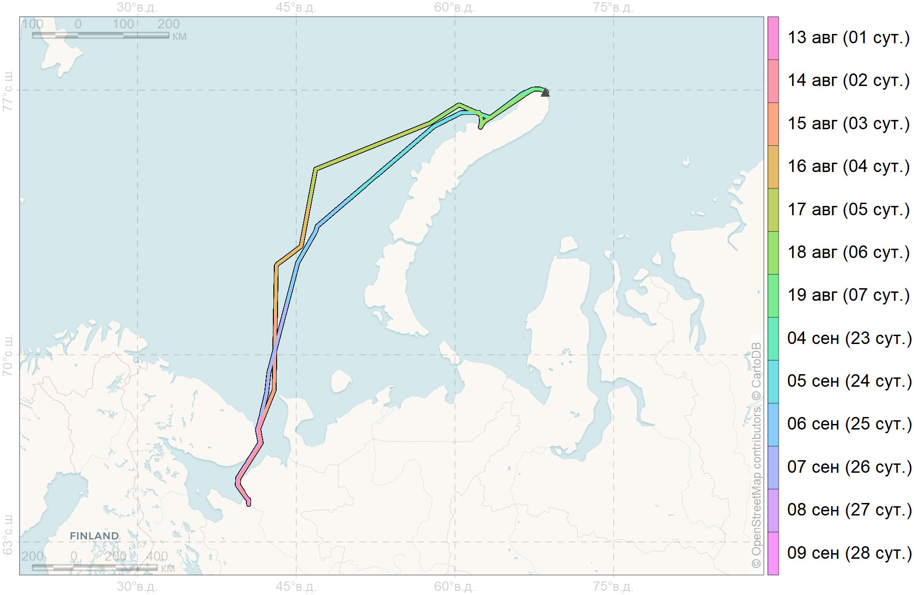
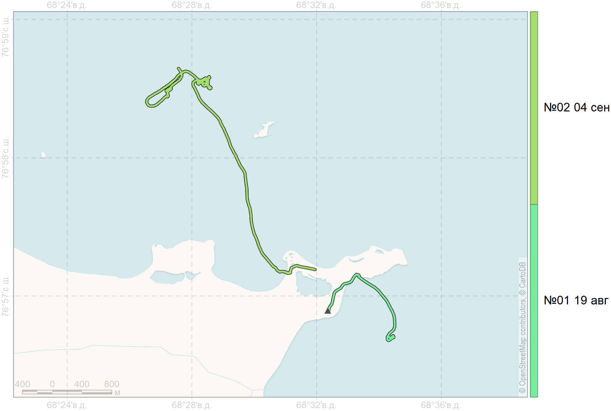
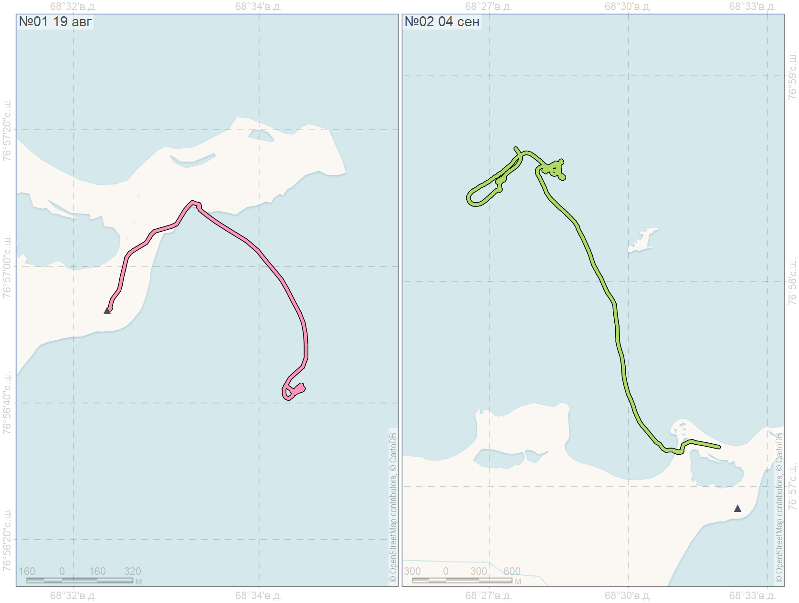
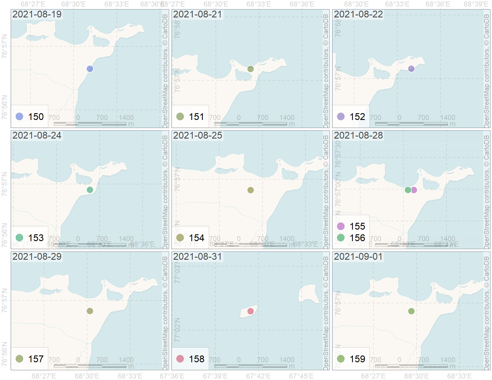
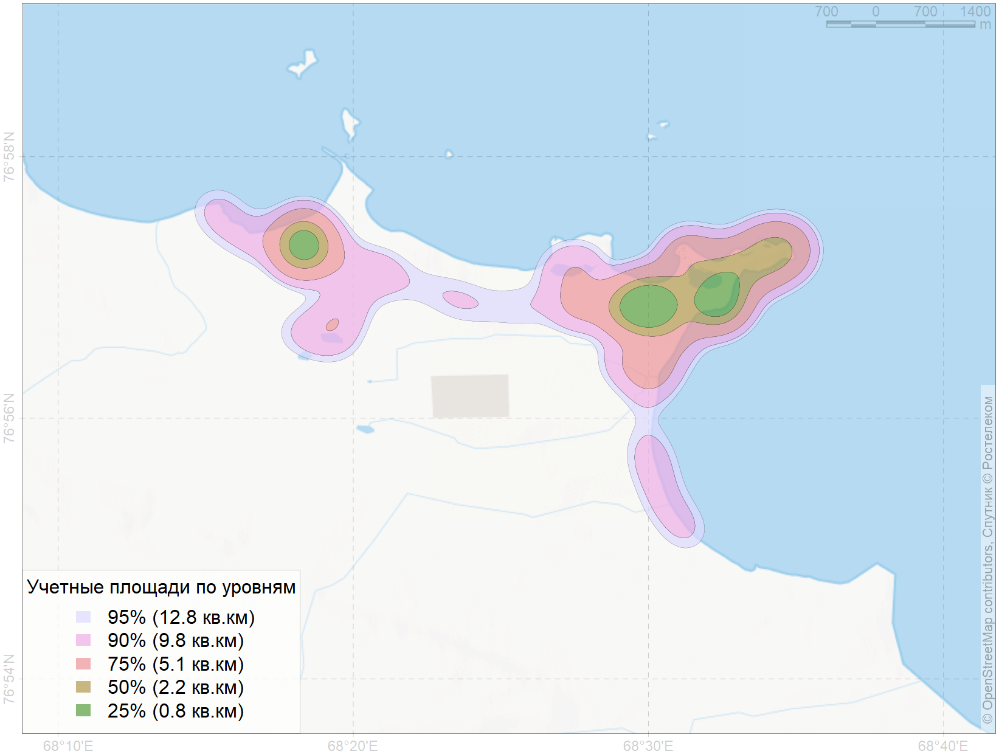

layout: true .banner.small[ #### «Иван Петров» - 2021 Мыс Желания <img src="assets/31a1dba0~chunk.jpg" width="114" /> <img src="assets/bb22ed70~chunk.jpg" width="41" /> <img src="assets/c8041bb4~chunk.jpg" width="29" /> ] --- class: metadata middle left name: H321 .sidebar.left-column[ ## [Цели и задачи](#H90e) ## [Методы](#H4bb) ## [Экспедиционные маршруты](#H9fe) ## [Маршрутные точки](#He55) ## [Результаты](#Ha79) ] .mainbar.right-column[ .author[Мордвинцев И. Н., Иванов Е. А., Платонов Н. Г.] .institute[ИПЭЭ РАН] .author[Мизин И. А.] .institute[НП «Русская Арктика»] .title[Оценка устойчивости арктических экосистем на основании исследования динамики состояния ключевых видов] .subtitle[Исследования белого медведя] .meeting[] .location[Москва] .date[2021-10-04 08:49] ] --- name: H90e .sidebar.left-column[ ## [Цели и задачи](#H90e) <span class="bullet bullet-active">[•](#H90e)</span><span class="bullet mslide5">[•](#Hac7)</span>.fg[].bg[] ## [Методы](#H4bb) ## [Экспедиционные маршруты](#H9fe) ## [Маршрутные точки](#He55) ## [Результаты](#Ha79) ] .mainbar.right-column[ .doublesize[ # Исследования белого медведя .pull-left-30[ ] .pull-right-70[ Программа сохранения биологического разнообразия Организатор: Роснефть Исполнитель: Сотрудники ИПЭЭ РАН, НП «Русская Арктика». Работы Постоянно действующей экспедиции РАН по Программе изучения белого медведя российской Арктики. ] ] ] --- name: Hac7 .sidebar.left-column[ ## [Цели и задачи](#H90e) <span class="bullet bullet">[•](#H90e)</span><span class="bullet bullet-active">[•](#Hac7)</span>.fg[].bg[] ## [Методы](#H4bb) ## [Экспедиционные маршруты](#H9fe) ## [Маршрутные точки](#He55) ## [Результаты](#Ha79) ] .mainbar.right-column[ .large[ .pull-left-60[ - Проведение судовых наблюдений за морскими млекопитающими и отдельными видами птиц для оценки биологического разнообразия, распределения и обильности кормовой базы белого медведя. - Оценка абиотических ресурсов окружающей среды - Отловы - Контроль физиологических показателей (температура тела, пульс, оксигенация) - Морфометрия, включая взвешивание - Сбор биоматериалов, в том числе и для микробиологических исследований - Долгосрочное мечение (ушная метка) - Краткосрочное мечение для идентификации с большой дистанции (окрашивание) - Установка оборудования для спутниковой биотелеметрии (взрослые самки) <!-- <sup>*</sup> --> ] .pull-right-40[ ] ] <!-- .footnote[<sup>*</sup> Взрослые самки] --> ] --- name: H4bb .sidebar.left-column[ ## [Цели и задачи](#H90e) ## [Методы](#H4bb).fg[] ### [Организация работ](#H4bb).fg[].bg[] ### [Район работ](#toponim) ## [Экспедиционные маршруты](#H9fe) ## [Маршрутные точки](#He55) ## [Результаты](#Ha79) ] .mainbar.right-column[ .Large[ + Участие в судовых наблюдениях совместно с командой по изучению моржа. + Мониторинг встречаемости белых медведей в окрестностях полевой базы «Мыс Желания». + Отлов белого медведя с привады. Применение сухопутной колесной техники ограничено из-за непригодности ландшафта для передвижений в свободном направлении. Возможный отлов из укрытий на территории полевой базы «Мыс Желания». ] ] --- name: toponim .sidebar.left-column[ ## [Цели и задачи](#H90e) ## [Методы](#H4bb).fg[] ### [Организация работ](#H4bb) ### [Район работ](#toponim).fg[].bg[] ## [Экспедиционные маршруты](#H9fe) ## [Маршрутные точки](#He55) ## [Результаты](#Ha79) ] .mainbar.right-column[ .Large[ + Равнинные и непокрытые ледником ландшафты северной части архипелага Новая Земля. ] <img src="assets/toponims-zoom11.png" width="1330" height="568" bound style="display: block; margin: auto;" /> <style type="text/css"> :root { --pointsize: 12pt; --sidebar: 18%; } .sidebar { font-size: 85%; } .metadata .mainbar { font-size: 175%; } </style> ] --- name: H9fe .sidebar.left-column[ ## [Цели и задачи](#H90e) ## [Методы](#H4bb) ## [Экспедиционные маршруты](#H9fe).fg[] ### [НИС «Иван Петров»](#H9fe) <span class="bullet bullet-active">[•](#H9fe)</span><span class="bullet mslide12">[•](#H278)</span><span class="bullet mslide13">[•](#H508)</span>.fg[].bg[] ### [Полевая база «Мыс Желания»](#H364) ## [Маршрутные точки](#He55) ## [Результаты](#Ha79) ] .mainbar.right-column[ <div style="height: 533px; margin-bottom: 1em;" class="scroll"> <div id="htmlwidget-69177bfe606fdaec7974" style="width:100%;height:auto;" class="datatables html-widget"></div> <script type="application/json" data-for="htmlwidget-69177bfe606fdaec7974">{"x":{"filter":"none","vertical":false,"data":[[1,2,3,4,5,6,7,23,24,25,26,27,28],["Судовые наблюдения","Судовые наблюдения","Судовые наблюдения","Судовые наблюдения","Судовые наблюдения","Судовые наблюдения","Судовые наблюдения","Судовые наблюдения","Судовые наблюдения","Судовые наблюдения","Судовые наблюдения","Судовые наблюдения","Судовые наблюдения"],["13 августа","14 августа","15 августа","16 августа","17 августа","18 августа","19 августа","04 сентября","05 сентября","06 сентября","07 сентября","08 сентября","09 сентября"],["09:26","00:00","00:00","00:00","00:00","00:00","00:00","13:04","00:00","00:00","00:00","00:00","00:00"],["23:59","23:59","23:59","23:59","23:59","23:59","06:13","23:59","23:59","23:59","23:59","23:59","08:25"],[28.965,199.281,206.719,209.997,220.478,168.231,37.056,101.848,225.429,206.055,228.234,169.023,61.55],["14:34","24:00","24:00","24:00","24:00","24:00","6:14","10:56","24:00","24:00","24:00","24:00","8:26"]],"container":"<table class=\"display\">\n <thead>\n <tr>\n <th>Судовые сутки<\/th>\n <th>Вид работ<\/th>\n <th>Дата проведения<\/th>\n <th>Время начала<\/th>\n <th>Время окончания<\/th>\n <th>Протяженность, миль<\/th>\n <th>Продолжительность<\/th>\n <\/tr>\n <\/thead>\n<\/table>","options":{"dom":"lftip","pageLength":8,"lengthMenu":[8,13],"columnDefs":[{"className":"dt-right","targets":[0,5]}],"order":[],"autoWidth":false,"orderClasses":false}},"evals":[],"jsHooks":[]}</script> </div> <div id="htmlwidget-ded1954910d7bc6d2093" style="width:100%;height:auto;" class="datatables html-widget"></div> <script type="application/json" data-for="htmlwidget-ded1954910d7bc6d2093">{"x":{"filter":"none","vertical":false,"data":[[13],[28],["13 августа"],["09 сентября"],[2062.9],[10.7]],"container":"<table class=\"display\">\n <thead>\n <tr>\n <th>Дней участия в рейсе<\/th>\n <th>Продолжительность рейса<\/th>\n <th>Начало рейса<\/th>\n <th>Окончание рейса<\/th>\n <th>Протяженность, миль<\/th>\n <th>Продолжительность, сут<\/th>\n <\/tr>\n <\/thead>\n<\/table>","options":{"dom":"t","pageLength":8,"lengthMenu":8,"columnDefs":[{"className":"dt-right","targets":[0,1,4,5]}],"order":[],"autoWidth":false,"orderClasses":false}},"evals":[],"jsHooks":[]}</script> ] --- name: H278 .sidebar.left-column[ ## [Цели и задачи](#H90e) ## [Методы](#H4bb) ## [Экспедиционные маршруты](#H9fe).fg[] ### [НИС «Иван Петров»](#H9fe) <span class="bullet bullet">[•](#H9fe)</span><span class="bullet bullet-active">[•](#H278)</span><span class="bullet mslide13">[•](#H508)</span>.fg[].bg[] ### [Полевая база «Мыс Желания»](#H364) ## [Маршрутные точки](#He55) ## [Результаты](#Ha79) ] .mainbar.right-column[  ] --- name: H508 .sidebar.left-column[ ## [Цели и задачи](#H90e) ## [Методы](#H4bb) ## [Экспедиционные маршруты](#H9fe).fg[] ### [НИС «Иван Петров»](#H9fe) <span class="bullet bullet">[•](#H9fe)</span><span class="bullet bullet">[•](#H278)</span><span class="bullet bullet-active">[•](#H508)</span>.fg[].bg[] ### [Полевая база «Мыс Желания»](#H364) ## [Маршрутные точки](#He55) ## [Результаты](#Ha79) ] .mainbar.right-column[ <img src="assets/route-separate-1.png" width="1330" height="661" bound style="display: block; margin: auto;" /> ] --- name: H364 .sidebar.left-column[ ## [Цели и задачи](#H90e) ## [Методы](#H4bb) ## [Экспедиционные маршруты](#H9fe).fg[] ### [НИС «Иван Петров»](#H9fe) ### [Полевая база «Мыс Желания»](#H364) <span class="bullet bullet-active">[•](#H364)</span><span class="bullet mslide15">[•](#Hb9e)</span><span class="bullet mslide16">[•](#H20e)</span>.fg[].bg[] #### [Разгрузка/погрузка](#H35b) #### [Наземные отловы](#H28f) #### [Высадки на лодках](#H5dc) ## [Маршрутные точки](#He55) ## [Результаты](#Ha79) ] .mainbar.right-column[ <div style="height: 533px; margin-bottom: 1em;" class="scroll"> <div id="htmlwidget-5c8636c27e29d22860e7" style="width:100%;height:auto;" class="datatables html-widget"></div> <script type="application/json" data-for="htmlwidget-5c8636c27e29d22860e7">{"x":{"filter":"none","vertical":false,"data":[[1,2,3,4,4,5,6,7,8,8,9,9,10,11,11,13,14,14,15,15],["Наземный учёт","Наземный учёт","Наземный учёт","Наземный учёт","Наземный учёт","Наземный учёт","Наземный отлов","Наземный отлов","Высадки на лодках","Наземный учёт","Наземный учёт","Наземный учёт","Наземный учёт","Наземный учёт","Наземный отлов","Высадки на лодках","Наземный отлов","Наземный учёт","Наземный учёт","Наземный учёт"],["19 августа","20 августа","21 августа","22 августа","22 августа","23 августа","24 августа","25 августа","26 августа","26 августа","27 августа","27 августа","28 августа","29 августа","29 августа","31 августа","01 сентября","01 сентября","02 сентября","02 сентября"],["13:30","15:09","11:10","10:47","15:47","10:18","05:24","13:58","08:15","17:01","09:23","11:31","17:59","11:06","23:51","09:55","11:25","16:08","12:20","13:34"],["21:22","17:48","14:50","14:28","19:18","10:46","07:06","16:21","16:50","17:47","12:17","15:31","19:22","16:12","01:45","19:29","14:10","17:29","13:33","17:26"],[24.761,10.107,21.982,7.948,13.458,4.279,0.784,3.937,57.772,4.853,11.105,38.927,12.07,21.518,2.458,65.212,5.645,2.931,2.939,27.005],["7:51","2:39","3:40","3:42","3:32","0:28","1:41","2:24","8:35","0:46","2:54","4:00","1:23","5:06","1:54","9:33","2:45","1:21","1:13","3:52"]],"container":"<table class=\"display\">\n <thead>\n <tr>\n <th>День полевых работ<\/th>\n <th>Вид работ<\/th>\n <th>Дата проведения<\/th>\n <th>Время начала<\/th>\n <th>Время окончания<\/th>\n <th>Протяженность, км<\/th>\n <th>Продолжительность<\/th>\n <\/tr>\n <\/thead>\n<\/table>","options":{"dom":"lftip","pageLength":8,"lengthMenu":[8,20],"columnDefs":[{"className":"dt-right","targets":[0,5]}],"order":[],"autoWidth":false,"orderClasses":false}},"evals":[],"jsHooks":[]}</script> </div> <div id="htmlwidget-20c4361687b5042c31a8" style="width:100%;height:auto;" class="datatables html-widget"></div> <script type="application/json" data-for="htmlwidget-20c4361687b5042c31a8">{"x":{"filter":"none","vertical":false,"data":[[20],[14],[16],["19 августа"],["02 сентября"],[339.7],[69.3]],"container":"<table class=\"display\">\n <thead>\n <tr>\n <th>Всего учетных работ<\/th>\n <th>Число рабочих дней<\/th>\n <th>Диапазон рабочих дней<\/th>\n <th>Первый день работ<\/th>\n <th>Последний день работ<\/th>\n <th>Протяженность, км<\/th>\n <th>Продолжительность, час<\/th>\n <\/tr>\n <\/thead>\n<\/table>","options":{"dom":"t","pageLength":8,"lengthMenu":8,"columnDefs":[{"className":"dt-right","targets":[0,1,2,5,6]}],"order":[],"autoWidth":false,"orderClasses":false}},"evals":[],"jsHooks":[]}</script> ] --- name: Hb9e .sidebar.left-column[ ## [Цели и задачи](#H90e) ## [Методы](#H4bb) ## [Экспедиционные маршруты](#H9fe).fg[] ### [НИС «Иван Петров»](#H9fe) ### [Полевая база «Мыс Желания»](#H364) <span class="bullet bullet">[•](#H364)</span><span class="bullet bullet-active">[•](#Hb9e)</span><span class="bullet mslide16">[•](#H20e)</span>.fg[].bg[] #### [Разгрузка/погрузка](#H35b) #### [Наземные отловы](#H28f) #### [Высадки на лодках](#H5dc) ## [Маршрутные точки](#He55) ## [Результаты](#Ha79) ] .mainbar.right-column[ <img src="assets/route-combine-234.png" width="1330" height="661" bound style="display: block; margin: auto;" /> ] --- name: H20e .sidebar.left-column[ ## [Цели и задачи](#H90e) ## [Методы](#H4bb) ## [Экспедиционные маршруты](#H9fe).fg[] ### [НИС «Иван Петров»](#H9fe) ### [Полевая база «Мыс Желания»](#H364) <span class="bullet bullet">[•](#H364)</span><span class="bullet bullet">[•](#Hb9e)</span><span class="bullet bullet-active">[•](#H20e)</span>.fg[].bg[] #### [Разгрузка/погрузка](#H35b) #### [Наземные отловы](#H28f) #### [Высадки на лодках](#H5dc) ## [Маршрутные точки](#He55) ## [Результаты](#Ha79) ] .mainbar.right-column[ <img src="assets/route-separate-234.png" width="1330" height="661" bound style="display: block; margin: auto;" /> ] --- name: H35b .sidebar.left-column[ ## [Цели и задачи](#H90e) ## [Методы](#H4bb) ## [Экспедиционные маршруты](#H9fe).fg[] ### [НИС «Иван Петров»](#H9fe) ### [Полевая база «Мыс Желания»](#H364).fg[] #### [Разгрузка/погрузка](#H35b) <span class="bullet bullet-active">[•](#H35b)</span><span class="bullet mslide18">[•](#Hc75)</span><span class="bullet mslide19">[•](#Hb05)</span>.fg[].bg[] #### [Наземные отловы](#H28f) #### [Высадки на лодках](#H5dc) ## [Маршрутные точки](#He55) ## [Результаты](#Ha79) ] .mainbar.right-column[ <div style="height: 533px; margin-bottom: 1em;" class="scroll"> <div id="htmlwidget-71b2c771ea21c85cbe96" style="width:100%;height:auto;" class="datatables html-widget"></div> <script type="application/json" data-for="htmlwidget-71b2c771ea21c85cbe96">{"x":{"filter":"none","vertical":false,"data":[[1,17],["Погрузка/разгрузка","Погрузка/разгрузка"],["19 августа","04 сентября"],["06:13","11:14"],["09:05","13:04"],[2.599,7.056],["2:52","1:50"]],"container":"<table class=\"display\">\n <thead>\n <tr>\n <th>День полевых работ<\/th>\n <th>Вид работ<\/th>\n <th>Дата проведения<\/th>\n <th>Время начала<\/th>\n <th>Время окончания<\/th>\n <th>Протяженность, км<\/th>\n <th>Продолжительность<\/th>\n <\/tr>\n <\/thead>\n<\/table>","options":{"dom":"t","pageLength":8,"lengthMenu":8,"columnDefs":[{"className":"dt-right","targets":[0,5]}],"order":[],"autoWidth":false,"orderClasses":false}},"evals":[],"jsHooks":[]}</script> </div> <div id="htmlwidget-03099ac1a38c78027c1a" style="width:100%;height:auto;" class="datatables html-widget"></div> <script type="application/json" data-for="htmlwidget-03099ac1a38c78027c1a">{"x":{"filter":"none","vertical":false,"data":[[2],[2],[17],["19 августа"],["04 сентября"],[9.7],[4.7]],"container":"<table class=\"display\">\n <thead>\n <tr>\n <th>Всего учетных работ<\/th>\n <th>Число рабочих дней<\/th>\n <th>Диапазон рабочих дней<\/th>\n <th>Первый день работ<\/th>\n <th>Последний день работ<\/th>\n <th>Протяженность, км<\/th>\n <th>Продолжительность, час<\/th>\n <\/tr>\n <\/thead>\n<\/table>","options":{"dom":"t","pageLength":8,"lengthMenu":8,"columnDefs":[{"className":"dt-right","targets":[0,1,2,5,6]}],"order":[],"autoWidth":false,"orderClasses":false}},"evals":[],"jsHooks":[]}</script> ] --- name: Hc75 .sidebar.left-column[ ## [Цели и задачи](#H90e) ## [Методы](#H4bb) ## [Экспедиционные маршруты](#H9fe).fg[] ### [НИС «Иван Петров»](#H9fe) ### [Полевая база «Мыс Желания»](#H364).fg[] #### [Разгрузка/погрузка](#H35b) <span class="bullet bullet">[•](#H35b)</span><span class="bullet bullet-active">[•](#Hc75)</span><span class="bullet mslide19">[•](#Hb05)</span>.fg[].bg[] #### [Наземные отловы](#H28f) #### [Высадки на лодках](#H5dc) ## [Маршрутные точки](#He55) ## [Результаты](#Ha79) ] .mainbar.right-column[  ] --- name: Hb05 .sidebar.left-column[ ## [Цели и задачи](#H90e) ## [Методы](#H4bb) ## [Экспедиционные маршруты](#H9fe).fg[] ### [НИС «Иван Петров»](#H9fe) ### [Полевая база «Мыс Желания»](#H364).fg[] #### [Разгрузка/погрузка](#H35b) <span class="bullet bullet">[•](#H35b)</span><span class="bullet bullet">[•](#Hc75)</span><span class="bullet bullet-active">[•](#Hb05)</span>.fg[].bg[] #### [Наземные отловы](#H28f) #### [Высадки на лодках](#H5dc) ## [Маршрутные точки](#He55) ## [Результаты](#Ha79) ] .mainbar.right-column[  ] --- name: H28f .sidebar.left-column[ ## [Цели и задачи](#H90e) ## [Методы](#H4bb) ## [Экспедиционные маршруты](#H9fe).fg[] ### [НИС «Иван Петров»](#H9fe) ### [Полевая база «Мыс Желания»](#H364).fg[] #### [Разгрузка/погрузка](#H35b) #### [Наземные отловы](#H28f) <span class="bullet bullet-active">[•](#H28f)</span><span class="bullet mslide21">[•](#H95a)</span><span class="bullet mslide22">[•](#H0ca)</span>.fg[].bg[] #### [Высадки на лодках](#H5dc) ## [Маршрутные точки](#He55) ## [Результаты](#Ha79) ] .mainbar.right-column[ <div style="height: 533px; margin-bottom: 1em;" class="scroll"> <div id="htmlwidget-72736e5f55b652519798" style="width:100%;height:auto;" class="datatables html-widget"></div> <script type="application/json" data-for="htmlwidget-72736e5f55b652519798">{"x":{"filter":"none","vertical":false,"data":[[6,7,11,14],["Наземный отлов","Наземный отлов","Наземный отлов","Наземный отлов"],["24 августа","25 августа","29 августа","01 сентября"],["05:24","13:58","23:51","11:25"],["07:06","16:21","01:45","14:10"],[0.784,3.937,2.458,5.645],["1:41","2:24","1:54","2:45"]],"container":"<table class=\"display\">\n <thead>\n <tr>\n <th>День полевых работ<\/th>\n <th>Вид работ<\/th>\n <th>Дата проведения<\/th>\n <th>Время начала<\/th>\n <th>Время окончания<\/th>\n <th>Протяженность, км<\/th>\n <th>Продолжительность<\/th>\n <\/tr>\n <\/thead>\n<\/table>","options":{"dom":"t","pageLength":8,"lengthMenu":8,"columnDefs":[{"className":"dt-right","targets":[0,5]}],"order":[],"autoWidth":false,"orderClasses":false}},"evals":[],"jsHooks":[]}</script> </div> <div id="htmlwidget-1473f635efe6a849ef03" style="width:100%;height:auto;" class="datatables html-widget"></div> <script type="application/json" data-for="htmlwidget-1473f635efe6a849ef03">{"x":{"filter":"none","vertical":false,"data":[[4],[4],[9],["24 августа"],["01 сентября"],[12.8],[8.7]],"container":"<table class=\"display\">\n <thead>\n <tr>\n <th>Всего учетных работ<\/th>\n <th>Число рабочих дней<\/th>\n <th>Диапазон рабочих дней<\/th>\n <th>Первый день работ<\/th>\n <th>Последний день работ<\/th>\n <th>Протяженность, км<\/th>\n <th>Продолжительность, час<\/th>\n <\/tr>\n <\/thead>\n<\/table>","options":{"dom":"t","pageLength":8,"lengthMenu":8,"columnDefs":[{"className":"dt-right","targets":[0,1,2,5,6]}],"order":[],"autoWidth":false,"orderClasses":false}},"evals":[],"jsHooks":[]}</script> ] --- name: H95a .sidebar.left-column[ ## [Цели и задачи](#H90e) ## [Методы](#H4bb) ## [Экспедиционные маршруты](#H9fe).fg[] ### [НИС «Иван Петров»](#H9fe) ### [Полевая база «Мыс Желания»](#H364).fg[] #### [Разгрузка/погрузка](#H35b) #### [Наземные отловы](#H28f) <span class="bullet bullet">[•](#H28f)</span><span class="bullet bullet-active">[•](#H95a)</span><span class="bullet mslide22">[•](#H0ca)</span>.fg[].bg[] #### [Высадки на лодках](#H5dc) ## [Маршрутные точки](#He55) ## [Результаты](#Ha79) ] .mainbar.right-column[ <img src="assets/route-combine-4.png" width="1330" height="661" bound style="display: block; margin: auto;" /> ] --- name: H0ca .sidebar.left-column[ ## [Цели и задачи](#H90e) ## [Методы](#H4bb) ## [Экспедиционные маршруты](#H9fe).fg[] ### [НИС «Иван Петров»](#H9fe) ### [Полевая база «Мыс Желания»](#H364).fg[] #### [Разгрузка/погрузка](#H35b) #### [Наземные отловы](#H28f) <span class="bullet bullet">[•](#H28f)</span><span class="bullet bullet">[•](#H95a)</span><span class="bullet bullet-active">[•](#H0ca)</span>.fg[].bg[] #### [Высадки на лодках](#H5dc) ## [Маршрутные точки](#He55) ## [Результаты](#Ha79) ] .mainbar.right-column[ <img src="assets/route-separate-4.png" width="1330" height="661" bound style="display: block; margin: auto;" /> ] --- name: H5dc .sidebar.left-column[ ## [Цели и задачи](#H90e) ## [Методы](#H4bb) ## [Экспедиционные маршруты](#H9fe).fg[] ### [НИС «Иван Петров»](#H9fe) ### [Полевая база «Мыс Желания»](#H364).fg[] #### [Разгрузка/погрузка](#H35b) #### [Наземные отловы](#H28f) #### [Высадки на лодках](#H5dc) <span class="bullet bullet-active">[•](#H5dc)</span><span class="bullet mslide24">[•](#He5c)</span><span class="bullet mslide25">[•](#H92c)</span>.fg[].bg[] ## [Маршрутные точки](#He55) ## [Результаты](#Ha79) ] .mainbar.right-column[ <div style="height: 533px; margin-bottom: 1em;" class="scroll"> <div id="htmlwidget-9ce92e40f6968f1081a2" style="width:100%;height:auto;" class="datatables html-widget"></div> <script type="application/json" data-for="htmlwidget-9ce92e40f6968f1081a2">{"x":{"filter":"none","vertical":false,"data":[[-1,8,13],["Высадки на лодках","Высадки на лодках","Высадки на лодках"],["18 августа","26 августа","31 августа"],["11:18","08:15","09:55"],["13:56","16:50","19:29"],[12.345,57.772,65.212],["2:38","8:35","9:33"]],"container":"<table class=\"display\">\n <thead>\n <tr>\n <th>День полевых работ<\/th>\n <th>Вид работ<\/th>\n <th>Дата проведения<\/th>\n <th>Время начала<\/th>\n <th>Время окончания<\/th>\n <th>Протяженность, км<\/th>\n <th>Продолжительность<\/th>\n <\/tr>\n <\/thead>\n<\/table>","options":{"dom":"t","pageLength":8,"lengthMenu":8,"columnDefs":[{"className":"dt-right","targets":[0,5]}],"order":[],"autoWidth":false,"orderClasses":false}},"evals":[],"jsHooks":[]}</script> </div> <div id="htmlwidget-32cac5a03fe764208428" style="width:100%;height:auto;" class="datatables html-widget"></div> <script type="application/json" data-for="htmlwidget-32cac5a03fe764208428">{"x":{"filter":"none","vertical":false,"data":[[3],[3],[14],["18 августа"],["31 августа"],[135.3],[20.8]],"container":"<table class=\"display\">\n <thead>\n <tr>\n <th>Всего учетных работ<\/th>\n <th>Число рабочих дней<\/th>\n <th>Диапазон рабочих дней<\/th>\n <th>Первый день работ<\/th>\n <th>Последний день работ<\/th>\n <th>Протяженность, км<\/th>\n <th>Продолжительность, час<\/th>\n <\/tr>\n <\/thead>\n<\/table>","options":{"dom":"t","pageLength":8,"lengthMenu":8,"columnDefs":[{"className":"dt-right","targets":[0,1,2,5,6]}],"order":[],"autoWidth":false,"orderClasses":false}},"evals":[],"jsHooks":[]}</script> ] --- name: He5c .sidebar.left-column[ ## [Цели и задачи](#H90e) ## [Методы](#H4bb) ## [Экспедиционные маршруты](#H9fe).fg[] ### [НИС «Иван Петров»](#H9fe) ### [Полевая база «Мыс Желания»](#H364).fg[] #### [Разгрузка/погрузка](#H35b) #### [Наземные отловы](#H28f) #### [Высадки на лодках](#H5dc) <span class="bullet bullet">[•](#H5dc)</span><span class="bullet bullet-active">[•](#He5c)</span><span class="bullet mslide25">[•](#H92c)</span>.fg[].bg[] ## [Маршрутные точки](#He55) ## [Результаты](#Ha79) ] .mainbar.right-column[ <img src="assets/route-combine-3.png" width="1330" height="661" bound style="display: block; margin: auto;" /> ] --- name: H92c .sidebar.left-column[ ## [Цели и задачи](#H90e) ## [Методы](#H4bb) ## [Экспедиционные маршруты](#H9fe).fg[] ### [НИС «Иван Петров»](#H9fe) ### [Полевая база «Мыс Желания»](#H364).fg[] #### [Разгрузка/погрузка](#H35b) #### [Наземные отловы](#H28f) #### [Высадки на лодках](#H5dc) <span class="bullet bullet">[•](#H5dc)</span><span class="bullet bullet">[•](#He5c)</span><span class="bullet bullet-active">[•](#H92c)</span>.fg[].bg[] ## [Маршрутные точки](#He55) ## [Результаты](#Ha79) ] .mainbar.right-column[ <img src="assets/route-separate-3.png" width="1330" height="661" bound style="display: block; margin: auto;" /> ] --- name: He55 .sidebar.left-column[ ## [Цели и задачи](#H90e) ## [Методы](#H4bb) ## [Экспедиционные маршруты](#H9fe) ## [Маршрутные точки](#He55) <span class="bullet bullet-active">[•](#He55)</span><span class="bullet mslide27">[•](#H7cc)</span>.fg[].bg[] ## [Результаты](#Ha79) ] .mainbar.right-column[  ] --- name: H7cc .sidebar.left-column[ ## [Цели и задачи](#H90e) ## [Методы](#H4bb) ## [Экспедиционные маршруты](#H9fe) ## [Маршрутные точки](#He55) <span class="bullet bullet">[•](#He55)</span><span class="bullet bullet-active">[•](#H7cc)</span>.fg[].bg[] ## [Результаты](#Ha79) ] .mainbar.right-column[ | Метка|Комментарий | |-----:|:------------------------------------| | 149|Павлик заметил и сфоткал минку | | 150|Склад черепов миш, взяли зубы | | 151|Отделили череп нерпы от позвоночника | | 152|Зубки от черепушки | | 153|НЗ-10 Милена 213860 | | 154|НЗ-11 Кирилл | | 155|Черепушка Or-DSC00534.jpg | | 156|Лёжка, экскременты | | 157|НЗ-12 Мохноног | | 158|Что-то на западном Оранском | | 159|НЗ-13 Капитолина 213861 | ] --- name: Ha79 .sidebar.left-column[ ## [Цели и задачи](#H90e) ## [Методы](#H4bb) ## [Экспедиционные маршруты](#H9fe) ## [Маршрутные точки](#He55) ## [Результаты](#Ha79).fg[] ### [Тепловая карта маршрутов](#Ha79).fg[].bg[] ### [Морфометрия](#H754) ] .mainbar.right-column[  ] --- name: H754 .sidebar.left-column[ ## [Цели и задачи](#H90e) ## [Методы](#H4bb) ## [Экспедиционные маршруты](#H9fe) ## [Маршрутные точки](#He55) ## [Результаты](#Ha79).fg[] ### [Тепловая карта маршрутов](#Ha79) ### [Морфометрия](#H754).fg[].bg[] ] .mainbar.right-column[ из нашей таблицы выбрать длину тела, массу, обхват груди и еще пару показателей ] --- class: middle name: H8cb .sidebar.left-column[ ## [Цели и задачи](#H90e) ## [Методы](#H4bb) ## [Экспедиционные маршруты](#H9fe) ## [Маршрутные точки](#He55) ## [Результаты](#Ha79) ] .mainbar.right-column[ .pull-left-40[ ] .pull-right-60[ Благодарим сотрудников Национального парка «Русская Арктика» Вадима Захарьина и Олега Валькова за неоценимую помощь в бытовом, транспортном и социальном обеспечении. ] ]